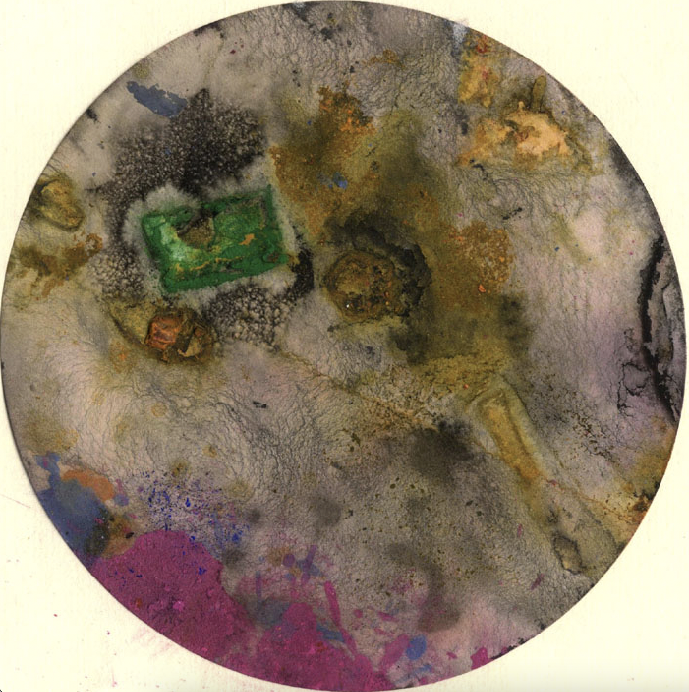
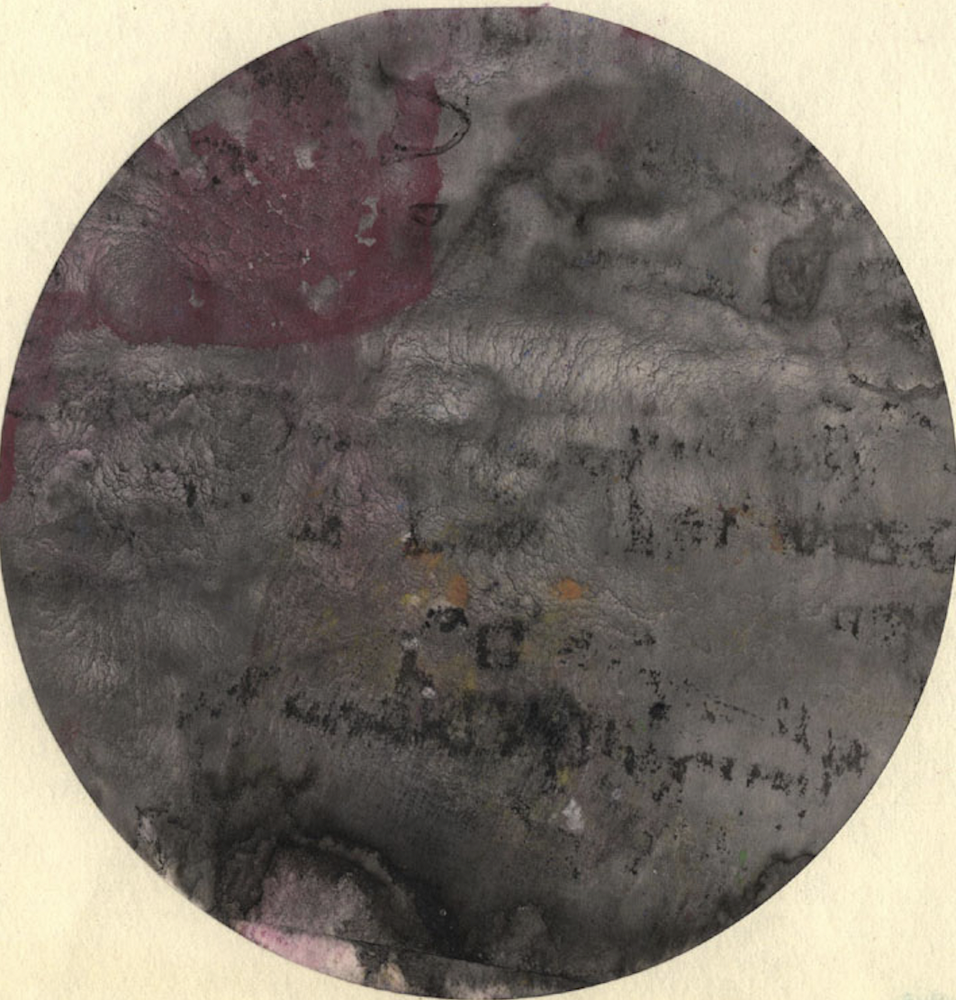

О премии
Премия учреждена с тремя целями:
1) продлить импульс ленинградской неподцензурной литературы (одним из важнейших представителей которой был Леон Богданов), 2) привлечь внимание общественности к темам, близким Леону Богданову (таким как погода или землетрясения), 3) освободить литературу от литераторов (или, что то же, расширить литературу до нелитераторов).
Форма (медиум) художественного высказывания может быть любой: текст, устная речь, песня, киносценарий, компьютерная игра... Высказывание может быть сделано на любом языке, но предпочтение отдаётся русскому и его диалектам (макрорусскому, орторусскому, метарусскому). Срок высказывания не ограничен. Премия может быть присуждена одному автору или проекту только один раз.
Оглашение лауреата (лауреатов) происходит каждый год 25 декабря (день рождения Леона Богданова). В жюри премии в настоящий момент входят Алексей Конаков, Михаил Куртов, Андрей Муждаба, Никита Сафонов.
Подробнее

О Леоне Богданове
Малоизвестный при жизни, сегодня (в 2023 году) Леон Богданов представляется фигурой, указывающей путь обновления российской словесности. Путь этот связан с отказом от высокомерного солипсизма, присущего отечественной литературе, особенно в ее «высоком» сегменте (когда материалом для создания любого нового литературного текста оказывается не мир вокруг, но единственно — предыдущие литературные тексты, которым «наследуют» и с которыми «полемизируют», которые «цитируют, «обыгрывают», «пародируют» и т.д.).
В противоположность такому солипсизму богдановский шедевр «Заметки о чаепитии и землетрясениях» (написанный в недрах ленинградской «второй культуры» 1970‒1980-х, тоже одержимой идеями «наследования литературной традиции», поэтикой цитаций и аллюзий) напоминает, что источником истинной поэзии могут быть не только сборники стихотворений, но и метеорологические сводки, и учебники геологии и геофизики, и рецепты заваривания чая, и расписания программ теле- и радиопередач, и списки покупок в продуктовых магазинах.
Оправданность такого подхода подтверждается судьбой самих «Заметок о чаепитии и землетрясениях»: долгие годы казавшееся маргинальным, в итоге радикальное письмо Леона Богданова предвосхитило целый ряд важных тенденций современной литературы (включая «автофикциональность», интерес к «поэтике повседневности», внимание к разного рода «нечеловеческим акторам», «экологический поворот» и т.д.).
Помимо этого, Леон Богданов может быть прочитан и понят массой других способов: и как настоящий мистик, напряженно ожидающий чудес и катастроф в год столетнего юбилея Велимира Хлебникова (1985), и как оригинальный натурфилософ эпохи горбачевской «перестройки», и как ироничный аналитик позднесоветских медиа, и как вдохновенный поэт дурмана, и как апологет окраинного провинциального домоседства, и как искусный ловец цифр и чисел. Но кем бы ни был Леон Богданов «на самом деле», мы надеемся, что его пример способен подвигнуть всех нас на поиски красоты и цветущей сложности нашего мира — в любых, пусть даже абсолютно «нелитературных» областях (где всегда и начинается настоящая новая литература).
Подробнее